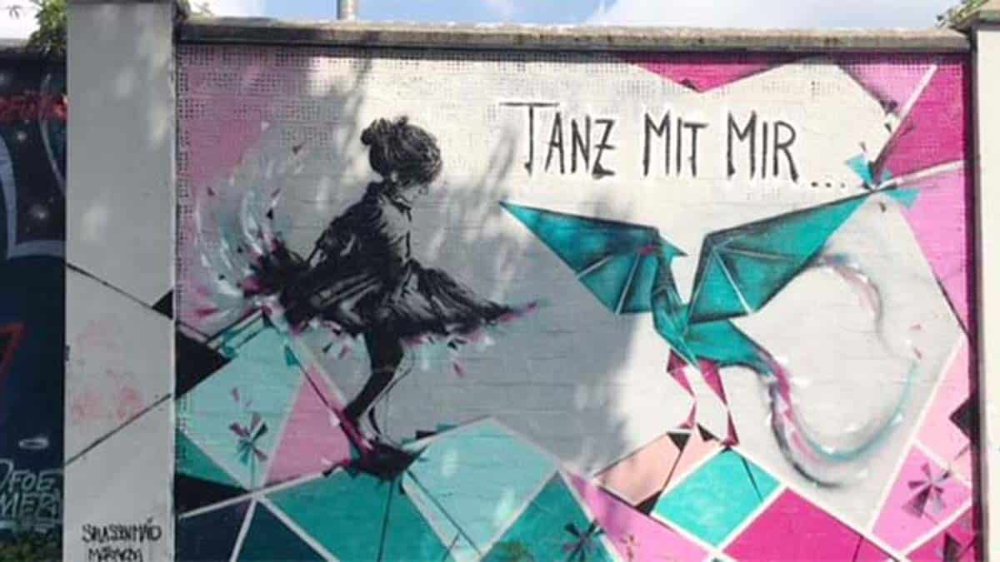
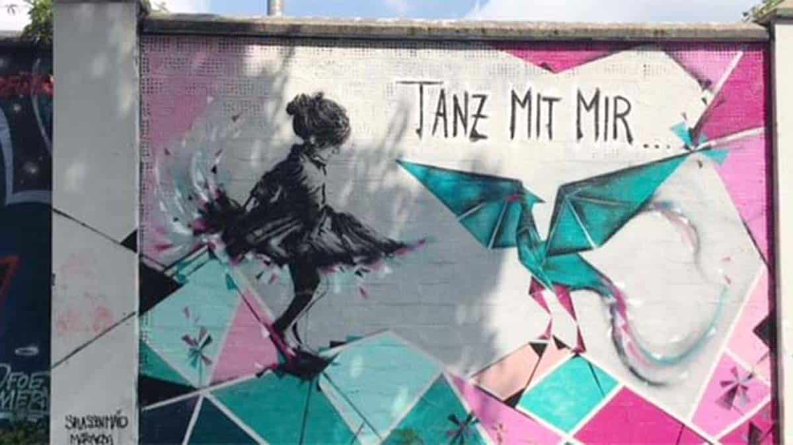

Lekker bezig lekker ding!
Je hebt de puzzel gekraakt! We gaan een heerlijk weekendje weg naar Düsseldorf :)
Ik heb het huren van een camper overwogen maar dat leek me te koud, Ameland leek me ook te koud en te duur, en van de RUHRGEBIET steden leek Düsseldorf mij de ideale combinatie hebben van een idyllische ALTSTADT (ok nu hou ik op) en een moderne bruisende stad met een Little Tokyo en leuke restaurantjes en cafeetjes aan de Rijn.
 

Ik heb gekeken naar verblijven in het centrum maar dat leek me heel krap, er waren alleen maar hotelletjes enzo. Ik hoop dat ik hier een cool plekje voor ons heb gevonden! Het is ruim, er zijn dieren, en alsnog maar een kwartiertje naar het centrum met het OV - zeggen ze.


Wil je alvast wat plannen? Hier zijn een paar handige links: